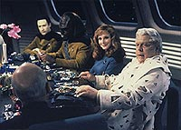
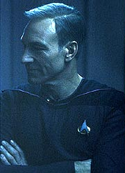
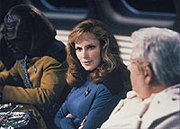
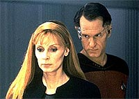

|
MANCHETE
DO EPISDIO
Estratgia
familiar marca trama policial
de fico cientfica sobre estupro
Episdio
anterior | Prximo
episdio
Sinopse:
Data Estelar: 45429.3.
A Enterprise est a caminho de Kaldra IV, carregando uma delegao
de Ullianos, uma raa aliengena de historiadores telepticos que
conduz pesquisas sondando as memrias distantes de seus objetos de
estudo. O lder da delegao, Tarmin, imediatamente demonstra
essa habilidade, ao ajudar Keiko a recuperar um memria reprimida
da infncia. Entretanto, Picard, Beverly e o resto da tripulao
relutam em deixar os Ullianos examin-los, a o filho de Tarmin, Jev,
critica seu pai por querer sondar os pensamentos da trpulao sem
permisso.
Troi deixa a reunio com Jev, e mais tarde, naquela noite,
experimenta um flashback inexplicado de um interldio romntico
entre ela e Riker. Subitamente, os avanos de Riker parecem mais
rudes, e Troi descobre que Jev substituiu o primeiro-oficial em sua
memria. Enquanto luta contra Jev, ela cai inconsciente.
 Na
enfermaria, a dra. Crusher tenta encontrar uma resposta para o sbito
estado de coma de Troi. Na busca por uma resposta, Riker pergunta a
Jev sobre seu encontro com a conselheira na noite passada. Jev fica
ofendido quando Riker pede que os Ullianos se submetam a um exame da
dra. Crusher, em busca de organismos contagiosos. Mais tarde,
naquele dia, Riker relembra um desastre a bordo da Enterprise.
Quando Jev substitui um membro da tripulao em sua memria, ele
tambm cai em estado de coma.
Com dois trpulantes inexplicavelmente inconscientes, a dra. Crusher
pede que Geordi faa um diagnstico por toda a nave, procurando
agentes que poderiam ter causado o fenmeno. Com mais exames, ela
descobre que o tecido cerebral de Riker e Troi possui uma
anormalidade em uma rea associada com desenvolvimento da memria.
Por causa disso, ela e Picard suspeitam que os Ullianos possam, de
algum modo, ser responsveis pelos comas, apesar de eles terem
passado em todos os testes mdicos. Sua pesquisa termina
abruptamente, entretanto, quando ela tambm cai em um estado de
coma, aps relembrar o reconhecimento de corpo de seu marido, Jack
Crusher, aps sua morte. Na memria, ela estava acompanhada do
capito Picard, que mais tarde substitudo por Jev.
 Data
e Geordi continuam de onde a dra. Crusher parou, examinando
incidentes similares entre os povos visitados anteriormente pelos
Ullianos. Enquanto isso, Picard pede aos aliengenas que aceitem
uma quarentena voluntria em seus aposentos para proteger a tripulao
de mais danos. Mais tarde, Troi recupera a conscincia, e, apesar
do desconforto, concorda em permitir que os Ullianos sondem sua
mente em busca de provas de sua prpria inocncia. Jev sonda a memria
da conselheira sobre os eventos do dia em que ela ficou
inconsciente, fazendo com que ela volte a ter o flashback com Riker.
Mas a surpresa surge quando a imagem do comandante substituda
pela de Tarmin.
Acreditando que a invaso de memria de Tarmin responsvel
pelos comas, Picard e Jev fazem planos de process-lo. Entretanto,
quando Jev visita Troi para dizer adeus, ele volta a ter o flashback
e percebe que foi Jev, no Tarmin, quem substituiu Riker antes que
ela ficasse inconsciente.
Assustada, ela tenta escapar, mas Jev a ataca. Ao mesmo tempo, Worf
e Data descobrem que Jev era o nico Ulliano presente em todos os
casos de coma nos diversos planetas pelos quais passaram os aliengenas.
Eles correm para o quarto de Troi bem a tempo de salv-la de Jev e
coloc-lo sob custdia.
Comentrios:
Estupro talvez
seja um assunto forte demais para estar em um episdio de Jornada
nas Estrelas --a no ser que seja camuflado o suficiente para
aliviar o assunto a ponto de torn-lo palatvel a todas as idades
e que d uma conotao de fico cientfica ao contedo.
Essa a premissa que se esconde por trs de "Violations".
O estupro mental apresentado durante o episdio o tema de uma
trama policial em que a tripulao da Enterprise obrigada a
desvendar. A idia do roteiro muito mais a de acompanhar as
motivaes dos personagens e os desdobramentos dos eventos do que
desvendar um mistrio.
 O
episdio bastante honesto, desde o princpio, com relao ao
que ele est mostrando, em que contexto, e qual o responsvel
pelos ataques. A cena em que Troi tem sua mente invadida mostra
claramente a associao entre a violao mental e o estupro
--criando, inclusive, ligaes de interesse sexual.
Por essa razo, fica muito bvia para o telespectador mais atento
a inteno dos produtores, de fazer um episdio sobre estupro,
embora todas as ressalvas e preocupaes cabveis em um seriado
voltado para a famlia tenham sido rigorosamente respeitadas.
Ao usar o estupro mental apenas como uma analogia "light"
do estupro real, os roteiristas perdem uma boa chance de divagar
mais sobre a natureza do tema de fico cientfica retratado. Por
isso, o episdio acaba no passando de uma verso pasteurizada de
uma trama policial, sem qualquer mrito criativo prprio.
Fazendo essas ressalvas sobre a falta de novidade acerca do formato
adotado para contar a histria, vale dizer que o episdio no
cansativo, e consegue manter a ateno sobre a histria, centrada
muito mais sobre a perspectiva de "quando e por que ocorrer o
prximo ataque de Jev" do que na responsabilidade pelos
crimes.
 Apesar
dos flashbacks que so despejados ao longo do episdio (que
incluem um Picard cabeludo consolando Beverly Crusher pela morte de
seu marido, Jack, e um interldio romntico entre Deanna e Will
Riker), os personagens regulares tiveram muito pouco a ganhar do
roteiro, fazendo deste um dos poucos episdios 100% temticos da
temporada, formato pouco utilizado durante a influncia de Michael
Piller, que privilegiava os personagens principais.
Do ponto de vista tcnico, "Violations" quase no
exigiu efeitos especiais, e o que fez a diferena foi a direo
bem-executada (auxiliada por uma edio precisa) de Robert Wiemer,
usando ngulos interessantes e cortes de cmera rpidos para
transmitir a sensao violenta do estupro mental. Vale um destaque
especial para a tomada em que vemos mos sobre o corpo de Deanna,
mas no sabemos distinguir muito bem sequer que parte do corpo
aquela, compatibilizando a necessidade dramtica com o pblico
familiar do seriado.
Citaes:
Tarmin - "I have
been accused of putting people to sleep with one too many stories,
captain. But this is the first time it's ever been suggested that I
might be the cause of someone's coma."
("Eu j fui acusado de pr as pessoas para dormir com histrias
muitas vezes, capito. Mas essa a primeira vez que foi sugerido
que eu pudesse ser a causa do coma de algum.")
Trivia:
 Aps muitas menes ao longo da srie, a morte de Jack Crusher,
marido da dra. Beverly Crusher, enfim explicada aqui. Doug Wert,
que atuou como Jack neste episdio, j havia feito uma breve apario
em "Family". Wert ainda
interpretar Jack Crusher no episdio "Journey's End",
da stima temporada. Essa ser a ltima apario do ator e do
personagem na Nova Gerao.
Aps muitas menes ao longo da srie, a morte de Jack Crusher,
marido da dra. Beverly Crusher, enfim explicada aqui. Doug Wert,
que atuou como Jack neste episdio, j havia feito uma breve apario
em "Family". Wert ainda
interpretar Jack Crusher no episdio "Journey's End",
da stima temporada. Essa ser a ltima apario do ator e do
personagem na Nova Gerao.
Ficha
tcnica:
Histria de Shari Goodhartz, T.
Michael Gray e Pamela Gray
Roteiro de Pamela Gray e Jeri Taylor
Direo de Robert Wiemer
Exibido em 03/02/1992
Produo: 112
Elenco:
Patrick Stewart como
Jean-Luc Picard
Jonathan Frakes como William Thomas Riker
Brent Spiner como Data
LeVar Burton como Geordi La Forge
Michael Dorn como Worf
Gates McFadden como Beverly Crusher
Marina Sirtis como Deanna Troi
Elenco convidado:
Rosalind Chao
como Keiko O'Brien
Ben Lemon como Jev
David Sage como Tarmin
Rick Fitts como Dr. Martin
Eve Brenner como Inad
Doug Wert como Jack Crusher
Craig Benton como Davis
Majel Barrett-Roddenberry como a voz do computador
Episdio
anterior | Prximo
episdio
|